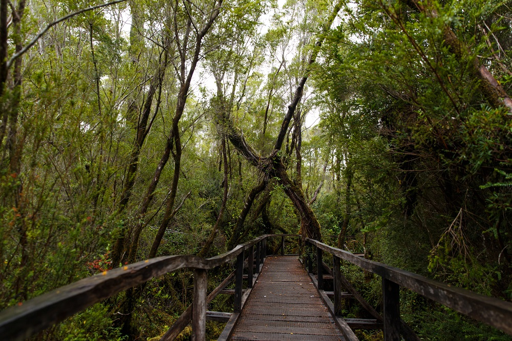
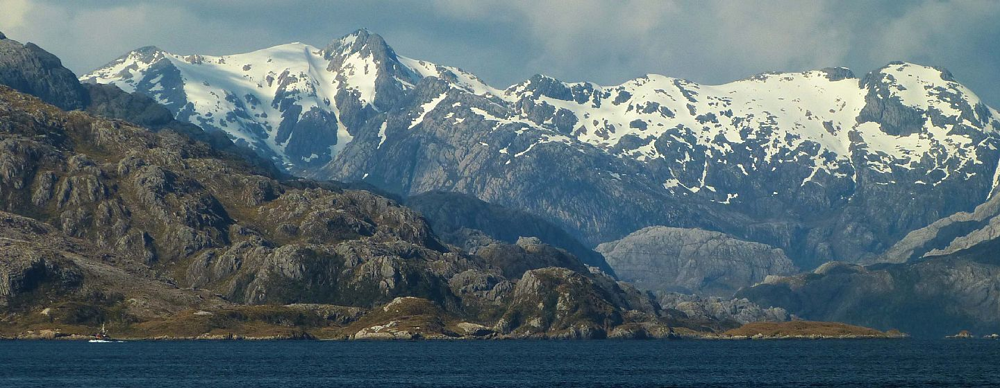
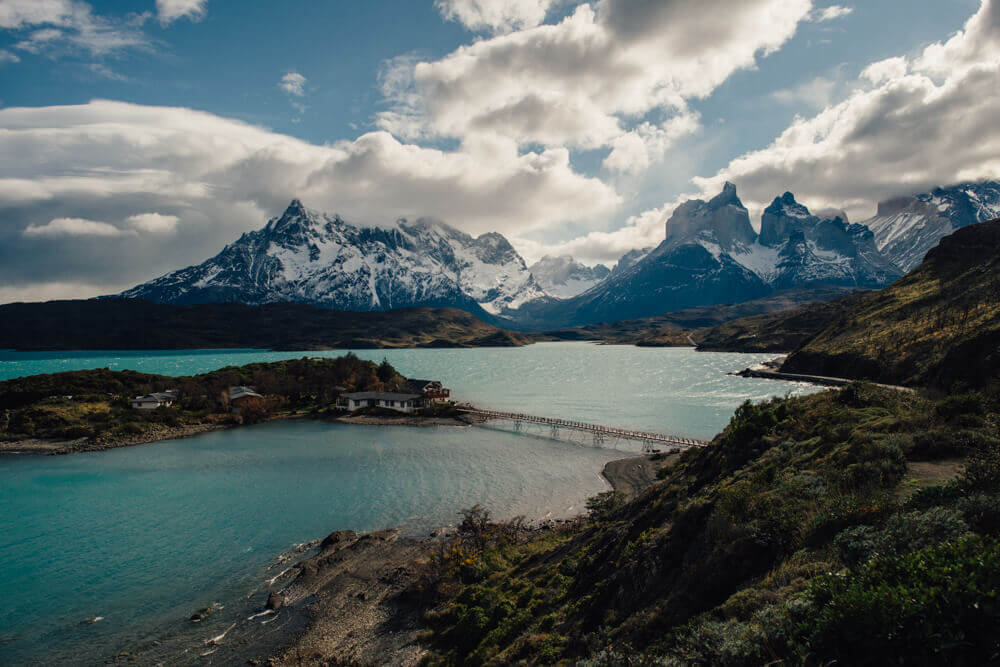

Parques Nacionales
Parque Nacional Chiloé
El Parque Nacional Chiloé es una de las unidades de la región mas ricas en patrimonio cultural,
donde se enfatiza lo histórico, etnográfico, arqueológico y también destacan
interesantes sitio paleontológico como el de playa Rahue.
Este parque, que se sitúa en el sector occidental de la Isla Grande de Chiloé,
es una prolongación de la desmembrada cordillera de la Costa. Creado el 17 de noviembre de 1982,
tiene una superficie de 42.567 hectáreas y posee dos sectores principales que son Chepu (comuna de Ancud) ubicado en al norte al Parque,
y Abtao que forma parte de las comunas de Castro, Chonchi y Dalcahue. Para llegar al Parque Nacional Chiloé tenemos que tomar la desviación a Cucao en la ruta 5,
aproximadamente a unos 30 Km de Castro, atravesando todo el interior de la isla hasta la costa oeste del Pacífico.
"Click en imagen para mas información"

Parque Nacional Alberto de Agostini
El Parque Nacional Alberto de Agostini se ubica al sur de Punta Arenas y al oeste de Puerto Williams.
Este es un parque compuesto por numerosos glaciares que permiten admirar la belleza de la zona austral.
Su principal atractivo es la Cordillera de Darwin, ubicada en la parte suroeste de la Isla Grande de Tierra del Fuego,
está cubierta por campos de hielo y comprende los montes Buckland y Sarmiento.
La cordillera Darwin junto a los sectores aledaños forma parte de la región los Ventisqueros Patagónicos del Pacífico,
ya que la mayoría de los ríos y glaciares drenan al océano pacifico. A la unidad se puede acceder principalmente por vía marítima o bien vía aérea desde Punta Arenas,
continuando vía marítima con empresas privadas al área de destino dentro del parque.
"Click en imagen para mas información"

Parque Nacional Torres del Paine
El Parque Nacional Torres del Paine se encuentra en el extremo sur de Chile,
en la Región de Magallanes y la Antártica chilena. Fue declarado Reserva de la Biosfera por la Unesco en 1978 y es considerado el parque nacional más importante de Chile.
Sus mayores atractivos radican en la espectacularidad de su relieve, montañas, glaciares, lagos y la flora y la fauna que lo convierte en un sitio ideal para la práctica
del ecoturismo y de deportes aventura.
Sin duda uno de los parques nacionales más espectaculares del país, la variedad de especies vegetales y animales,
unido a sus maravillosos atractivos escénicos y a su agreste geografía, lo convierten en uno de los más apetecidos por los amantes de la ecología y de los deportes aventura.
Cuenta con una gran implementación que facilita y da seguridad en su recorrido.
"Click en imagen para mas información"
